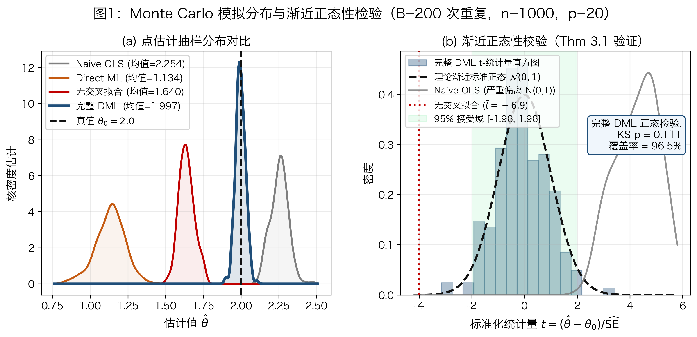
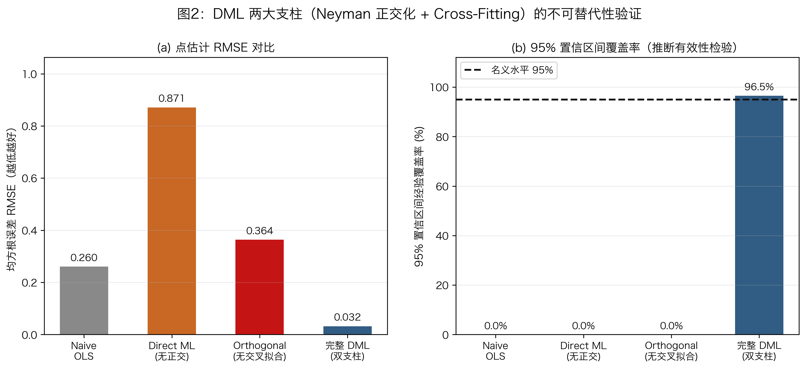
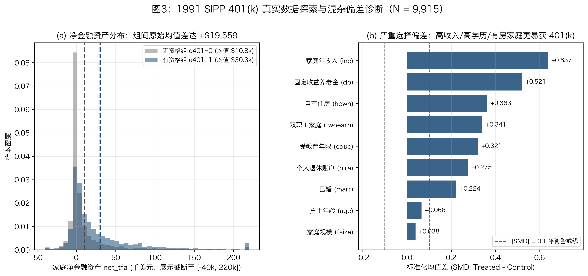
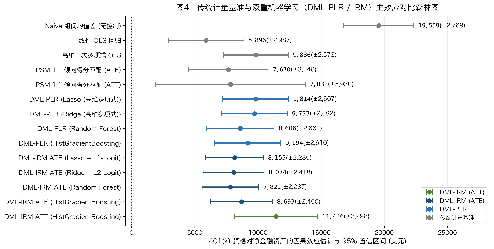
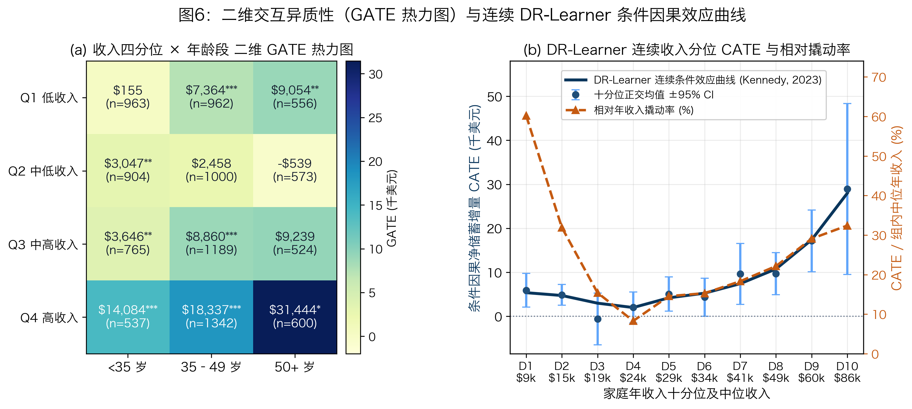

双重机器学习（DML）与高维因果推断：
理论原理、模拟验证与 401(k) 实证研究
针对高维非线性混杂下传统参数回归误设与直接机器学习推断失效的难题，系统阐述 Neyman 正交化与 K-折交叉拟合理论；通过 B=200 次 Monte Carlo 模拟验证有限样本性能，并应用于 9,915 户美国家庭 401(k) 养老金净储蓄因果效应评估。
一、模型背景与文献综述：高维因果推断的演进脉络
从传统半参数回归、双稳健得分到高维机器学习正交化，DML 破解高维混杂与推断有效性两难
Neyman (1923)、Rubin (1974) 与 Rosenbaum & Rubin (1983) 奠定条件可忽略性与倾向得分匹配理论基础。
Robinson (1988) 提出部分线性模型（PLR）去残差回归思想，在低维非参数场景实现 √n-一致估计。
Robins 等 (1994) 证明联合结果回归与倾向得分加权可提升一致性鲁棒性，降低模型误设风险。
Belloni 等 (2014) 与 Chernozhukov 等 (2018) 引入 Neyman 正交化与交叉拟合，打通任意机器学习因果推断。
| 因果估计方法 | 核心思想与参数设定 | 非线性与高维适应性 | 渐近推断性质 | 核心优势与局限 |
|---|---|---|---|---|
| 线性 OLS 回归 | 假定协变量 X 对 Y 线性可加 | 难以捕捉高阶非线性与交互项 | 函数误设时存在系统偏误 | 结构透明，但易低估或扭曲非线性混杂 |
| 二次多项式 OLS | 手工构造 X 的平方与交叉项 | 高维下特征维数呈 O(p²) 膨胀 | 过拟合导致方差显著放大 | 依赖人工先验设定，外推稳定性较弱 |
| PSM 1:1 倾向得分匹配 | 基于 Logit 倾向得分近邻配对 | 受限于参数化倾向得分模型 | Bootstrap 推断，丢弃未匹配样本 | 匹配直观，但 ATT 估计方差偏高 |
| 直接 ML 代入估计 | 仅对结果 Y 用树/正则回归去趋势 | 擅长拟合高维非线性特征交互 | 一阶收缩偏误发散，CI 覆盖率崩溃 | 预测精度高，但不可直接用于因果推断 |
| 双重机器学习 (DML) | Neyman 正交化 ＋ K-折交叉拟合 | 兼容 Lasso/Ridge/RF/GBDT 任意模型 | 在 o(n⁻¹/⁴) 速率下恢复 √n 渐近正态 | 兼具非线性拟合能力与合法置信区间 |
二、模型原理（一）：部分线性框架与机器学习的两类偏误
直接套用机器学习会受到 n⁻¹/⁴ 正则化偏误与样本内过拟合偏误双重侵蚀，导致统计推断失效
其中 θ₀ 为待估计的结构因果效应，g₀(X) 与 m₀(X) 为高维未知非线性扰动函数（Nuisance Functions），在维数较高时需借助机器学习估计。
若仅用随机森林或 Lasso 拟合 g(X) 并直接将残差 (Y − g(X)) 对 D 回归，为控制方差引入的正则化惩罚会使 g 的收敛速度慢于 √n（通常仅达 Op(n−1/4)）：
- 一阶泄露效应：由于协变量同样影响处置 D（m₀(X) ≠ 0），扰动函数的一阶估计误差会乘以 √n 直接穿透进 θplug。
- 推断失效后果：点估计产生系统性偏误，传统标准误严重低估不确定性，导致 95% 置信区间覆盖率坍塌至零。
即便同时对结果 Y 与处置 D 做残差化，若在同一全样本上直接训练高复杂度机器学习器（如无深度约束的深层随机森林）并评估样本内残差：
- 样本内伪相关：高自由度学习器过度拟合样本随机噪声，导致回归残差与处置残差之间产生虚假相关性。
- 破坏无偏条件：经验正交矩偏离理论零均值条件，同样引起显著有限样本偏误并破坏渐近正态分布。
二、模型原理（二）：Neyman 正交化与误差二阶乘积收敛
正交得分令一阶导数为零，将主导偏误压缩为两预测器误差乘积 n⁻¹/⁴×n⁻¹/⁴ = o(n⁻¹/²)
不直接估计结构函数 g₀(X)，而是同时对条件期望 ℓ(X) = E[Y | X] 与处置倾向 m(X) = E[D | X] 建模，构造去残差正交得分函数：
- 正交矩估计量：令样本矩 En[ψ]=0，解得 θDML = (vTu) / (vTv)，其中 u = Y − ℓ(X)，v = D − m(X)。
- Neyman 正交条件：在真值 η₀=(ℓ₀, m₀) 处 Gateaux 导数为零：∂η E[ψ(W; θ₀, η₀)] = 0，从而消除了扰动估计误差的一阶影响。
- 为什么只需慢收敛学习器？
在正交性条件下，一阶扰动偏误严格消失，估计量的主导偏误项转化为两个预测器估计误差的乘积与处置倾向误差平方和。 - √n-一致性与渐近正态定理（Chernozhukov et al., 2018 Thm 3.1）
在正则条件与交叉拟合下，√n(θDML − θ₀) →d N(0, σ²)，渐近方差满足三明治形式：
该渐近分布性质使得传统 Eicker-Huber-White 异方差稳健标准误与 95% 置信区间重新具备严格统计合法性。
只要结果学习器与处置学习器的 L₂ 误差速率略快于 n−1/4（如正则稀疏 Lasso、随机森林、梯度提升树或神经网络在各自正则结构下均可满足），二阶误差乘积即快于 n−1/2，不会影响主参数的 √n 渐近正态分布。
二、模型原理（三）：K-折交叉拟合与 PLR / IRM / IIVM 统一框架
折外交叉拟合切断过拟合通道，并将同一正交机制拓展至异质性处理效应（IRM）与工具变量（IIVM）
- 假定处置变量对结果的平均因果斜率 θ₀ 为常数。
- 分别使用机器学习估计 ℓ(X)=E[Y|X] 与 m(X)=E[D|X]。
- 结构简洁、自由度消耗少，适合作为基准稳健性对照。
- 基于双稳健 AIPW 得分，允许处置效应随协变量 X 任意变化。
- 统一估计 ATE、ATT，且可直接对正交伪结果 φi 分组求均值计算群体异质性效应 GATE。
- 针对存在不完全服从的内生处置情景，引入合法工具变量 Z。
- 控制高维非线性混杂后，通过双稳健得分识别依从群体（Compliers）的局部平均处理效应 LATE。
三、模拟分析（一）：非线性高维混杂 DGP 与抽样分布对比
Monte Carlo 模拟清晰复现线性误设、正则化偏误与过拟合偏误，验证完整 DML 的渐近无偏性

- 参数规模：X ~ N(0, I₂₀)，其中 6 维为有效混杂因子，14 维为无关噪声变量；真值 θ₀ = 2.0。
- 非线性函数：m₀(X) 与 g₀(X) 均包含 X₁²−1、X₂X₃、X₄²−1、X₅X₆ 等平方及二阶交互项。
- DML 估计量：二阶多项式（230 维）结合 LassoCV 开展 5-折交叉拟合正交回归。
- Naive OLS (2.254)：线性控制无法逼近二阶交互项，产生显著正向误设偏误 (+0.254)。
- Direct ML (1.134)：随机森林仅拟合 Y 而未对 D 正交化，正则化收缩导致明显左偏 (-0.866)。
- 无交叉拟合 (1.640)：深层森林样本内残差过拟合噪声，引发 -0.360 向下偏误。
- 完整 DML (1.997)：密度峰值精确分布于 θ₀=2.0 附近（偏误 -0.003），方差显著收敛。
三、模拟分析（二）：点估计精度（RMSE）与置信区间覆盖率检验
Neyman 正交化与 5-折交叉拟合缺一不可，联合实现最低误差（RMSE=0.032）与有效区间推断（96.5%）

- 前三种残缺方法因系统偏误远超标准误尺度，200 次试验中 95% 置信区间均未能覆盖真值（0.0%）。
- 完整 DML 将 RMSE 从 0.260–0.871 压低至 0.032，经验标准差（0.032）与理论三明治标准误（0.033）高度吻合。
| 模拟估计方法 (B=200, n=1000, p=20, θ₀=2.0) | 估计均值 | 偏误 Bias | 经验 SD | 平均理论 SE | RMSE | 95% 区间覆盖率 |
|---|---|---|---|---|---|---|
| Naive OLS (线性控制) | 2.254 | +0.254 | 0.058 | 0.056 | 0.260 | 0.0% |
| Direct ML Plug-in (无正交化) | 1.134 | -0.866 | 0.096 | 0.069 | 0.871 | 0.0% |
| Orthogonal ML (无交叉拟合) | 1.640 | -0.360 | 0.050 | 0.053 | 0.364 | 0.0% |
| 完整 DML (正交+5折交叉拟合) | 1.997 | -0.003 | 0.032 | 0.033 | 0.032 | 96.5% |
四、实证研究背景与数据诊断：1991 SIPP 401(k) 养老金计划
净金融资产高度右偏且存在 7 项超标协变量选择偏差，需借助 DML 剥离高维非线性混杂

- 核心争议：401(k) 养老金究竟带来家庭净新增储蓄，还是仅诱导富裕群体把原有金融资产转入免税账户（资产挤出/替代效应）？
- 处置与样本：处置变量 e401（雇主提供资格）占 37.1%（3,682 vs 6,233 户），合格群体实际参与率 p401 为 70.45%。
- 控制特征 X：包含年收入、年龄、学历、家庭规模、婚姻、双职工、DB 养老金、个人退休账户与住房 9 维协变量。
- 右偏与极端尾部：净金融资产 net_tfa 跨度 −$50.2 万至 +$153.7 万（均值 $18,052、中位数仅 $1,499），原始均值差达 +$19,559。
- 严重选择偏差：9 个协变量中 7 个 |SMD| 超过 0.1 警戒线，其中年收入（+0.637）、固定收益养老金（+0.521）、自有住房（+0.363）与双职工（+0.341）失衡最为突出，且收入与财富呈强非线性关系。
五、实证分析（一）：传统计量基准与多学习器 DML 主效应对比
四类不同算法下的 DML-IRM 结论高度一致，在显著缩小标准误的同时确认 401(k) 净增储蓄效应

| 底层机器学习器 | PLR 估计 (SE) | IRM ATE (SE) |
|---|---|---|
| Lasso (高维多项式) | +$9,814 ($1,330) | +$8,155 ($1,166) |
| Ridge (高维多项式) | +$9,733 ($1,323) | +$8,074 ($1,234) |
| Random Forest | +$8,606 ($1,358) | +$7,822 ($1,142) |
| HistGradientBoosting | +$9,194 ($1,332) | +$8,693 ($1,250) |
- 显著净储蓄效应：扣除高收入混杂后，IRM-ATE 在四类算法下稳定落于 +$7,822 ~ +$8,693，证明 401(k) 显著增加了家庭净金融资产。
- 模型效率全面占优：IRM 标准误降至 $1,142–$1,250，低于线性 OLS（$1,524，且受线性误设影响偏低至 +$5,896）和 1:1 PSM（ATT SE 高达 $3,026）。
- 处理组实际获益更高：HGB 下合格群体平均效应 ATT 达 +$11,436（SE $1,683）。
五、实证分析（二）：重叠性检验、协变量敏感性与工具变量 LATE
倾向得分重叠充足、剔除潜在内生控制后估计稳健，且工具变量进一步识别实际参与因果效应

为检验是否开设 IRA（pira）所隐含的主观储蓄偏好对估计结果的潜在影响，剔除 pira 仅保留 8 项协变量重估 HGB 模型：
| HGB 模型设定 | 9 协变量基准 | 剔除 pira (8 协变量) |
|---|---|---|
| DML-PLR | +$9,194 | +$9,719 (SE $1,393) |
| DML-IRM (ATE) | +$8,693 | +$8,923 (SE $1,312) |
| DML-IRM (ATT) | +$11,436 | +$11,803 (SE $1,727) |
- 合格家庭中实际参与 p401 的比例为 70.45%（无资格组为 0%，呈现严格单边服从结构）。
- 以资格 e401 作为实际参与 p401 的工具变量，IIVM 测得依从者净金融资产增量为 +$12,107（95% CI [$8,580, $15,634]），与 ATE ÷ 0.7045 逻辑自洽。
五、实证分析（三）：基于正交伪结果的收入异质性效应（GATE）
不破坏正交渐近推断的前提下揭示群体异质性：Q4 绝对效应居首，Q1 相对收入储蓄杠杆高达 36.6%

- 绝对增量集中于高收入层：Q4 组（中位年收 $64,203）单户净增金融资产达 +$20,588，占总资产扩张规模比重最高。
- 相对收入杠杆以低收入层最大：Q1 组（中位年收 $13,500）增量虽为 +$4,945，却占其中位年收 36.6%（p<0.001），反映该群体初始储蓄极低、资产挤出极少。
- 中低收入层呈流动性约束：Q2 组估计区间 [$-885, $4,845] 跨过零点，受日常现金流支出挤压影响，对长期锁定型激励敏感度较低。
| 家庭年收入分层 | 样本量 | 组内中位年收 | GATE 因果增量 | 标准误 SE | 95% 置信区间 | 增量 / 中位年收 |
|---|---|---|---|---|---|---|
| Q1 (低收入) | 2,481 | $13,500 | +$4,945 | $1,147 | [$2,697, $7,192] | 36.6% |
| Q2 (中低收入) | 2,477 | $25,356 | +$1,980 | $1,462 | [$-885, $4,845] | 7.8% |
| Q3 (中高收入) | 2,478 | $38,928 | +$7,331 | $1,770 | [$3,861, $10,800] | 18.8% |
| Q4 (高收入) | 2,479 | $64,203 | +$20,588 | $4,283 | [$12,193, $28,982] | 32.1% |
六、研究结论（一）：DML 模型性能总结与实证决策启示
DML 在有限样本精度、区间有效性、多学习器一致性与异质性拓展方面均显著优于传统基准模型
- 1. 理论机制验证：双支柱协同消除双类偏误
Monte Carlo 模拟证实，唯有联合使用 Neyman 正交化与 5-折交叉拟合，方可在高维非线性混杂下实现渐近无偏（均值 1.997 vs 真值 2.000），将 RMSE 由 0.260–0.871 降至 0.032，并把 95% 置信区间覆盖率由 0.0% 恢复至 96.5%。 - 2. 实证跨学习器稳健性与估计精度优势
在 9,915 户真实家庭数据上，Lasso、Ridge、RF 与 HGB 四类算法下的 DML-IRM ATE 高度集中于 +$7,822 ~ +$8,693，标准误（$1,142–$1,250）明显低于线性 OLS（$1,524）与 1:1 PSM（ATT SE $3,026）。 - 3. 统一框架延展能力强
同一正交得分体系可平滑拓展至工具变量（IIVM LATE +$12,107）与群体异质性估计（GATE），无需针对不同任务重新推导复杂渐近分布。
- 1. 证实税收递延养老金的净储蓄创造效应
剥离年收入 SMD (+0.637) 等高阶混杂后，401(k) 资格与实际参与仍分别带来 +$8,693 与 +$12,107 净金融资产增量，不支持“纯资产替代”假说。 - 2. 商业金融机构分层运营与 AUM 考核优化
Q4 高收入群体单户撬动 +$20,588 净金融资产，应作为企业代发与个人养老金高阶组合的核心获客池，并以整户净金融资产增量防止内部资金搬迁。 - 3. 普惠养老政策工具设计启发
Q1 低收入群体相对收入撬动率高达 36.6%（p<0.001），提示“默认自动加入（Auto-Enrollment）＋定额财政/雇主配比”对提升中低收入长期财富缓冲显著有效；Q2 群体则需配套更具流动性的应急支取机制。
六、研究结论（二）：模型适用边界、局限性与前沿延伸
明确条件可忽略性、重叠度与收敛速率边界，并衔接面板 DID-DML、Causal Forest 与混淆敏感性检验
- 1. 条件可忽略性假设限制（Unconfoundedness）
DML 依赖“控制可观测协变量 X 后处置与潜在结果独立”的识别前提，无法消除未观测个体特征（如主观风险厌恶或储蓄偏好）带来的残留偏误；本文通过剔除 pira 检验与 IIVM 工具变量部分缓解但不能完全替代随机对照或面板识别。 - 2. 极端倾向得分下的逆概率权重敏感性
IRM 正交得分包含 1/m(X) 与 1/(1−m(X)) 项；虽然本实证 5%–95% 重叠区为 0.054–0.707，但在极度不平衡业务场景中 m(X) 接近 0 或 1 会引发方差剧烈膨胀，需采用截断、重叠加权（Overlap Weights）或样本修剪。 - 3. 收敛速率前提与截面外推限制
要求两阶段学习器达到 o(n−1/4) 速率；此外 1991 年美国截面数据主要用于检验机制，推广至中国个人养老金体系仍需本土纵贯追踪数据标定。
- 1. 面板双重差分与双向固定效应融合（DID-DML）
将时间差分或个体固定效应与 DML 正交得分结合，从而同步消除不随时间变化的未观测个体异质性与时变高维非线性混杂。 - 2. 个体条件平均处理效应（CATE / Causal Forest）
从本文按收入四分位聚合的 GATE 进一步精细化至个体层面异质效应估计 τ(X) = E[Y(1)−Y(0) | X=x]，并结合 Policy Tree 学习可解释的精准营销或授信决策边界。 - 3. 遗漏变量敏感性定量边界分析（OVB Bounds）
引入 Chernozhukov 等 (2022) 提出的偏 R² 非参数敏感性分析框架，定量测算未观测混淆因子至少需解释多少比例的处置与结果残差方差，才会逆转当前 +$8,693 的显著结论。
七、模型拓展应用：结合实习与研究领域的 3 分钟个人阐述
围绕各自业务场景界定“处置变量—高维非线性混杂—净因果目标”，说明 DML 的实际落地价值
- 实践背景：Trexquant 美股多因子选股研究实习 ＋ 上海人工智能实验室大模型推理与 Agent 强化学习研究。
- 拓展 1｜多因子增量 Alpha 识别：利用非线性学习器合成情绪或量价特征时，市值、波动率与行业暴露常与收益呈高维非线性混杂；采用 DML 同时对新因子与超额收益做交叉拟合正交残差，可无偏检验新信号真实增量 Alpha。
- 拓展 2｜Agent RL 离线策略评估：在高维复杂任务状态空间下，借助双稳健正交得分进行反事实回报归因，有效抑制奖励模型或价值函数正则化带来的策略评估偏误。
- 应用场景：互联网电商优惠券激励、会员转化定价或内容分发干预评估（请结合个人实习经历替换）。
- 混杂痛点：历史营销干预往往优先触达高活跃用户，直接比较“领券组与未领券组”转化率会产生严重正向选择偏差。
- DML 方案：利用 GBDT 吸收数十维历史点击、浏览与复购非线性特征，通过 IRM 正交得分识别真正对补贴敏感的高增效客群。
- 预期价值：剥离自然转化群体，优化补贴资金边际投放效率（ROI）。
- 应用场景：消费信贷额度调整、分期利率优惠因果效应评估（请结合个人实习经历替换）。
- 混杂痛点：风控授信原本依赖高维非线性信用评分卡，授信额度与客户资质高度纠缠。
- DML 方案：保留 XGBoost/LightGBM 对复杂征信特征的强表征能力，借助 Neyman 正交交叉拟合输出具有严格 95% 置信区间的提额净收益与坏账增量响应。
- 边界兜底：结合小比例随机保留实验组验证条件可忽略性假设。
python3 html_to_pptx.py --version v2 即可同步更新 PPTX。八、主要参考文献与 Q&A 交流
全部模拟程序、1991 SIPP 实证脚本与检验结果可完整复现，敬请各位老师与同学批评指正！
- [1] Chernozhukov, V., Chetverikov, D., Demirer, M., Duflo, E., Hansen, C., Newey, W., & Robins, J. (2018). Double/debiased machine learning for treatment and structural parameters. The Econometrics Journal, 21(1), C1–C68.
- [2] Robinson, P. M. (1988). Root-N-consistent semiparametric regression. Econometrica, 56(4), 931–954.
- [3] Robins, J. M., Rotnitzky, A., & Zhao, L. P. (1994). Estimation of regression coefficients when some regressors are not always observed. Journal of the American Statistical Association, 89(427), 846–866.
- [4] Rosenbaum, P. R., & Rubin, D. B. (1983). The central role of the propensity score in observational studies for causal effects. Biometrika, 70(1), 41–55.
- [5] Poterba, J. M., Venti, S. F., & Wise, D. A. (1995). Do 401(k) contributions crowd out other personal saving? Journal of Public Economics, 58(1), 1–32.
- [6] Abadie, A. (2003). Semiparametric instrumental variable estimation of treatment response models. Journal of Econometrics, 113(2), 231–263.
- [7] Chernozhukov, V., & Hansen, C. (2004). The effects of 401(k) participation on the wealth distribution. The Review of Economics and Statistics, 86(3), 735–751.
- [8] Belloni, A., Chernozhukov, V., & Hansen, C. (2014). Inference on treatment effects after selection among high-dimensional controls. Review of Economic Studies, 81(2), 608–650; Chernozhukov et al. (2024), CausalAIBook.
- Q1：DML-IRM 与传统 PSM 的本质差异
双稳健正交得分把偏差收敛阶压缩为二阶乘积 n−1/4×n−1/4，同时保留全样本信息，将 ATT 标准误从 $3,026 降至 $1,683。 - Q2：无交叉拟合为何产生负向偏误（1.640）？
深层树模型在全样本上过度拟合 Y 与 D 中的结构噪声，造成正交残差间出现人为负相关偏移。 - Q3：模拟与实证中底层学习器选择的逻辑
模拟采用 Poly2+Lasso 检验已知二阶结构下的理想速率；实证则并行四类异质算法交叉印证结论稳健性。 - Q4：如何进一步检验未观测储蓄偏好？
除剔除 pira 与借助 e401 估出 LATE 外，可引入面板 DID-DML 与偏 R² 混淆强度敏感性边界。